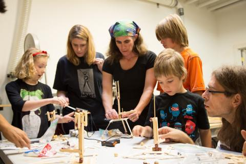

Curiosity Hacked Open Lab
Open Lab is an all ages program based on how children learn through various developmental and educational theories as well as a desire we see in the Maker culture for community and family inclusiveness. The idea is this: Twice a month we hold Open Labs where we have experts/mentors available to help kids with any project they bring in. There is also a featured project that a whole workshop is built around that specifically targets skill building. In addition, there is always a menu of other kits/activities that are available for kids that focus on a variety of interests, skills, and ways of learning. The structure has a method- it creates consistency and the opportunity for mentoring and improvement, the provided activities and featured workshops are designed to teach to multiple learning styles, the format supports autonomy and independence, and the program is inclusive and adaptable. Kids can earn badges or not for their skill building, and they can come every week or once in a while. The result is exceptional and exciting- families have come and learned, shared, hacked and formed community in our hackerspace while thriving on the opportunity to learn new skills, reinforce knowledge, and benefit from mentoring to explore their own interests and achieve their unique goals.
- Always wear close-toed shoes
- Always wear safety glasses or other safety gear when applicable
- Never use equipment without an adult present
- No roughhousing
- Be mindful and respectful of the space, the equipment, and the mentors.
- Open Lab is designed for exploration and community engagement. It is a drop-in program, and parents must stay on site for the duration of their child(rens) attendance at Open Lab.